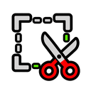
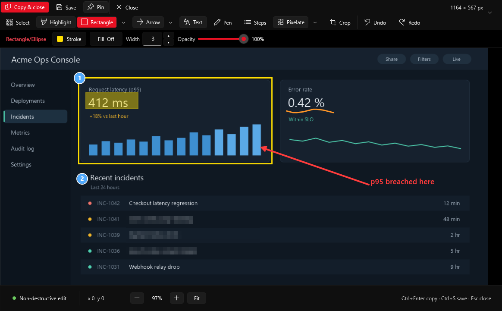

Capture any window, region, or monitor, annotate with arrows, text, and numbered steps, blur sensitive information before you share it, then copy or save. One PowerShell file, no installer, no telemetry.
Grab a window, a dragged region, the full desktop, the active window, or a single monitor — with a live size readout and pixel-precise magnifier, across every connected display.
Highlight, draw shapes, arrows and lines, add text or numbered steps, sketch with a pen, or blur and pixelate anything private — all non-destructive and undoable.
No telemetry, no analytics, no cloud upload, no admin rights, and no installer — screenshots go only to the clipboard or a file you choose.

SnipIT.ps1 from the latest release — no installer needed.Ctrl+Alt+Shift+Q to capture, then annotate, blur, and copy or save.